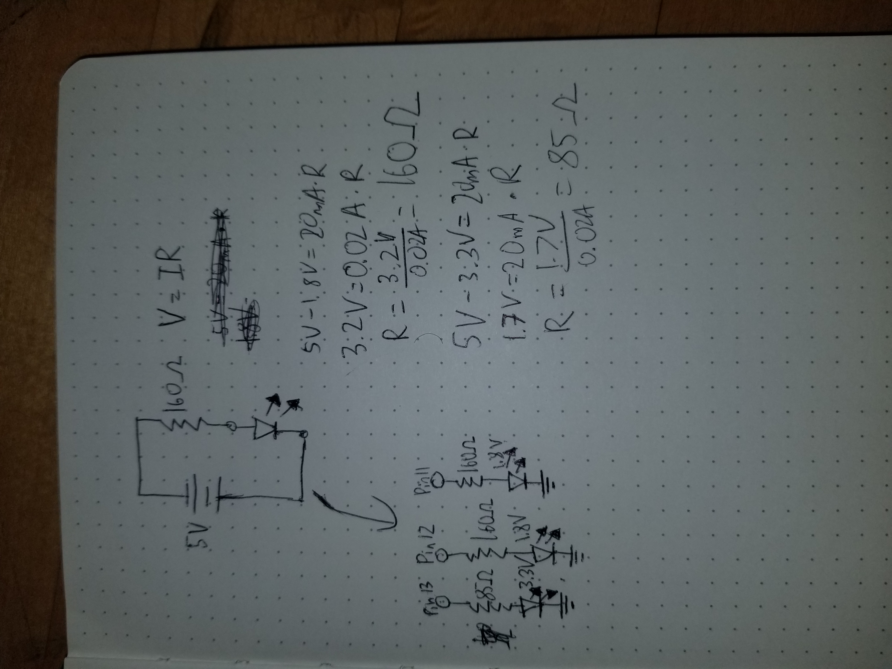

Anthony Nguyen's Assignment 1!

Here's my circuit! (Note: I initially ran into a problem with uploading my code so although my setup should've theoretically worked, it didn't originally display properly. But the circuit got fixed eventually!)
This is the circuit before turning it on.
This is the schematic that I drew for the circuit, as well as my calculations for how I decided on the resistance to use.
Finally, here's my code snippet for this assignment:
// the setup function runs once when you press reset or power the board
void setup() {
// initialize digital pins 13, 12, and 11 as outputs.
pinMode(13, OUTPUT);
pinMode(12, OUTPUT);
pinMode(11, OUTPUT);
}
// the loop function runs over and over again forever
void loop() {
digitalWrite(13, HIGH); // turn the LED on that is connected to pin 13 (HIGH is the voltage level)
delay(750); // wait for 3 quarters of a second
digitalWrite(12, HIGH); // turn the LED on that is connected to pin 12 (HIGH is the voltage level)
delay(100); // wait for a tenth of a second
digitalWrite(11, HIGH); // turn the LED on that is connected to pin 11 (HIGH is the voltage level)
digitalWrite(13, LOW); // turn the LED off by making the voltage LOW
delay(1000); // wait for a second
digitalWrite(12, LOW); // turn the LED off by making the voltage LOW
delay(500); // wait for half a second
digitalWrite(11, LOW); // turn the LED off by making the voltage LOW
delay(1500); // wait for a second and a half
}